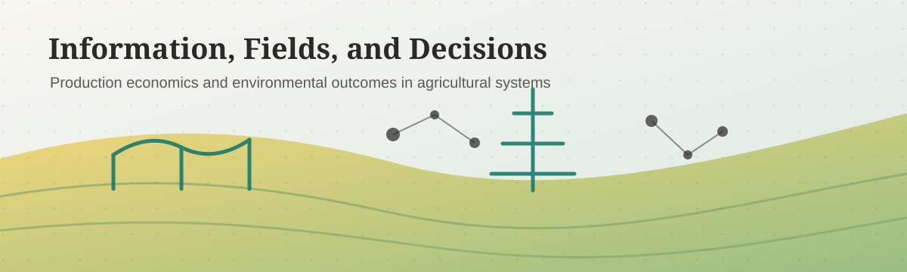

Policy Publication
Soybean Aphid and Changing Pesticide Usage in Iowa
Agricultural Policy Review Fall 2025. Center for Agricultural and Rural Development, Iowa State University.
PhD Candidate in Economics, Iowa State University
I am a PhD candidate in Economics at Iowa State University, with a focus on production economics and environmental economics. My research interests center on how information, spatial externalities, and long-term conservation practices shape farmers' decisions, environmental outcomes, and farmland values.
Costly information acquisition, pesticide use, conservation practices, and agricultural land valuation.

My work studies agricultural and environmental decision-making, including costly information acquisition, pesticide use, conservation practices, and farmland valuation.
I am especially interested in how information, spatial externalities, and long-term conservation practices shape management choices and environmental outcomes in agricultural systems.
Policy Publication
Agricultural Policy Review Fall 2025. Center for Agricultural and Rural Development, Iowa State University.
Publication
Journal of Environmental Policy and Administration, 29(3), 49-75. In Korean.
Working Paper
Integrated Pest Management (IPM) is built around a simple operational rule: scout the field, compare pest density to an economic threshold, and spray only when expected damage exceeds the cost of control. This paper embeds costly and imperfect scouting directly into the economic-threshold framework.
Calibrated to pesticide-use survey data, untreated-plot aphid data, and observed custom rates, the model implies a season-level value of growth-state information with a mean of $0.25 and a maximum of $3.17 per acre, against a monitoring cost of $4.61. The value lies below the cost in every observed plot-season.
Work in Progress
Work in Progress
Instructor
Principles of Microeconomics (ECON1010), Summer 2025 (4.71/5)
Lab Instructor
Intermediate Microeconomics (ECON3010), Fall 2024 (3.91/5); Fall 2025 (4.33/5); Spring 2026 (4.88/5)
Applied Economic Optimization (ECON2070), Spring 2025 (4.75/5)
Teaching Assistant
Principles of Microeconomics (ECON1010), Fall 2023
Principles of Macroeconomics (ECON1020), Spring 2023; Fall 2024
Farm Business Management (ECON2300), Fall 2022
Rural Property Appraisal (ECON3640), Spring 2024
Agriculture, Food & Trade Policy (ECON4600/5600), Spring 2026
Introductory Statistics for Economists, Spring 2019
Mathematics for Economics, Fall 2018
The current curriculum vitae from the migrated Google Sites page is available as a local PDF.
Download CV